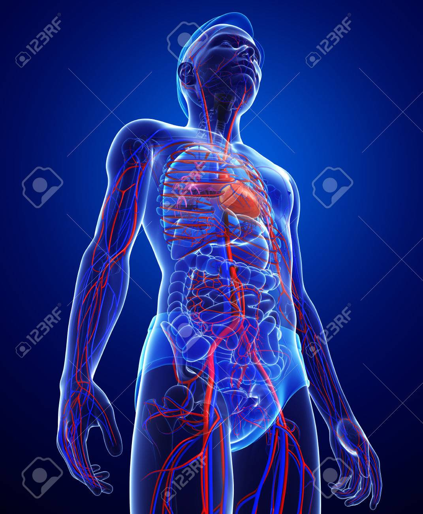
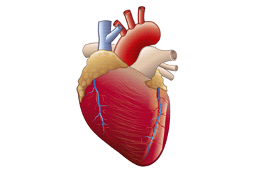
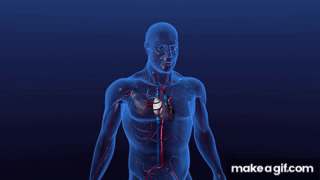

SISTEMA CIRCULATORIO



La función principal del sistema circulatorio es transportar oxígeno, nutrientes y hormonas a todas las células del cuerpo y recoger los desechos metabólicos (como el dióxido de carbono) para su posterior eliminación.
Para lograrlo de manera eficaz, el sistema opera a través de los siguientes componentes clave:
- Corazón: Actúa como una bomba muscular central que impulsa la sangre de forma continua por todo el organismo.
- Vasos sanguíneos: Comprenden una red de arterias (llevan sangre desde el corazón), venas (la regresan al corazón) y capilares (donde ocurre el intercambio real de sustancias).
- Funciones vitales adicionales: Además del transporte, regula la temperatura corporal, defiende al organismo a través del sistema inmunitario y participa en la coagulación para prevenir hemorragias.
VENAS y CORAZÓN
desoxigenada: La gran mayoría de las venas llevan sangre con bajo contenido de oxígeno y rica en desechos metabólicos hacia el corazón, para que luego sea enviada a los pulmones y purificada.
La función principal del corazón es bombear sangre y mantenerla en constante circulación por todo el cuerpo. A través de este proceso, distribuye oxígeno y nutrientes esenciales a todas las células, y transporta los desechos (como el dióxido de carbono) hacia los pulmones para ser expulsados.